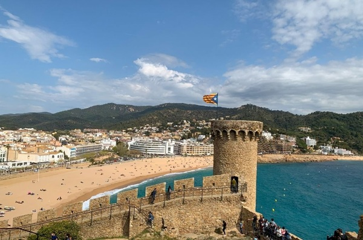

Los pueblos mas bonitos de cataluña
Los pueblos mas bonitos de cataluña

Cada estación del año es un nuevo motivo para disfrutar del encanto de Tossa de Mar.
Tossa de Mar es conocida por sus playas y calas en un entorno natural prácticamente virgen. Pero ofrece mucho más: patrimonio romano, medieval y modernista, anécdotas para los mitómanos del cine y una cocina de primer nivel.
Como dato curioso: Tossa de Mar fue el primer lugar del mundo en declararse Ciudad Antitaurina en 1989.
Y por último, en Tossa de Mar se puede encontrar un ambiente festivo, que entremezcla a turistas de todas partes del mundo, pero que además mantiene el sabor local de sus habitantes.